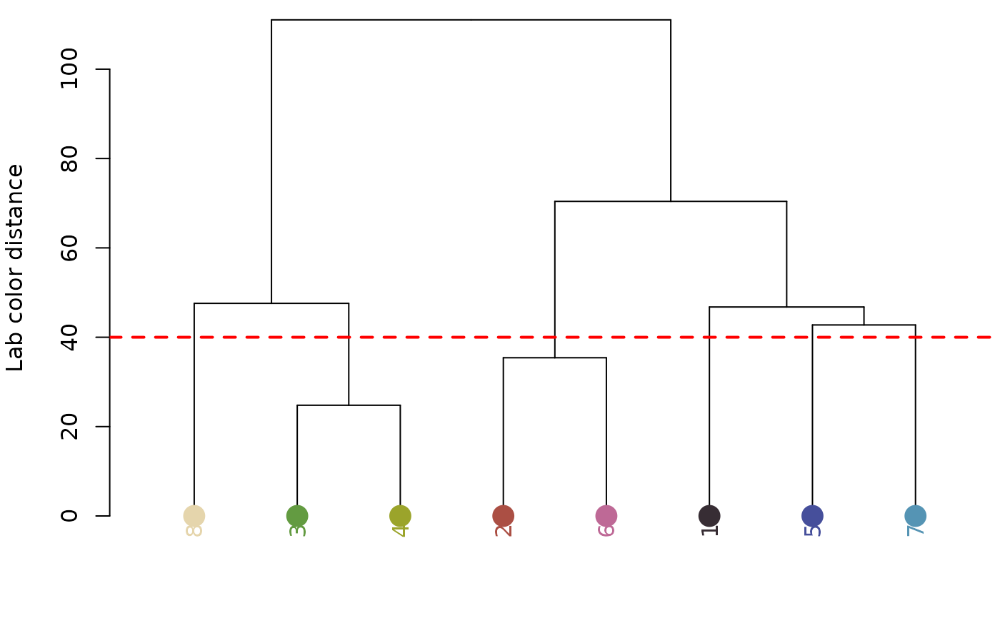
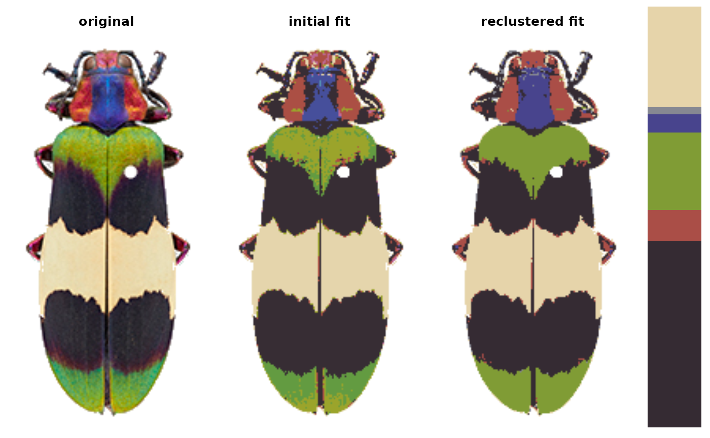
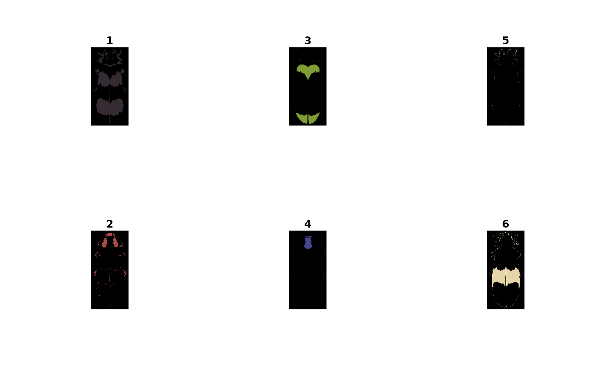
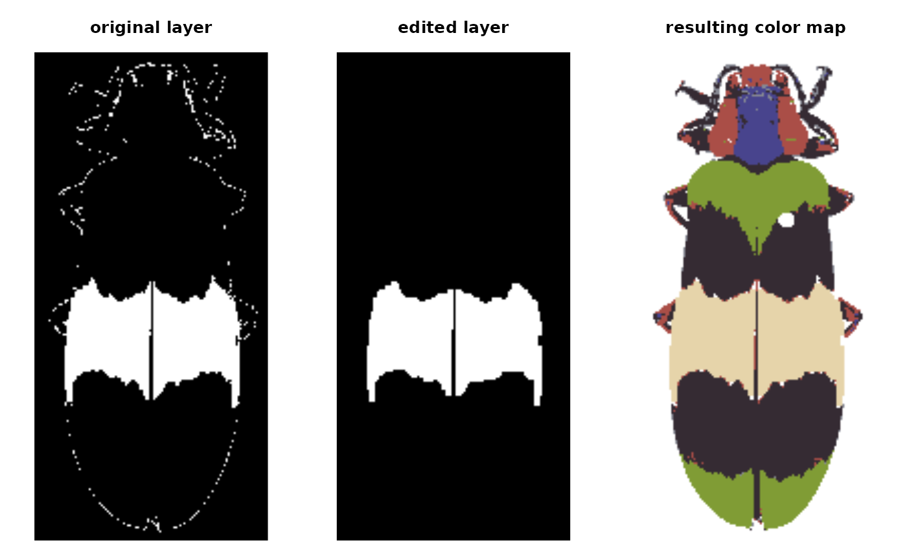
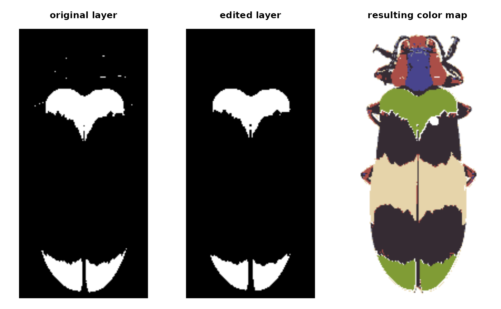
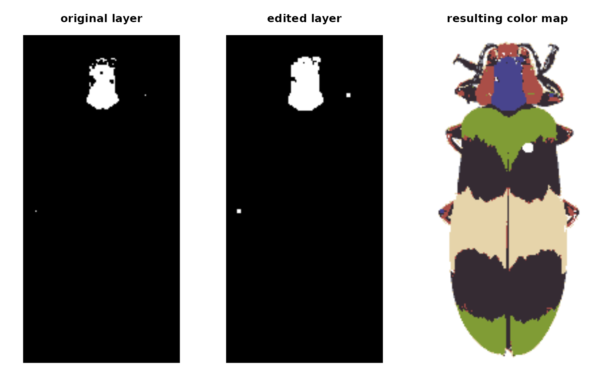
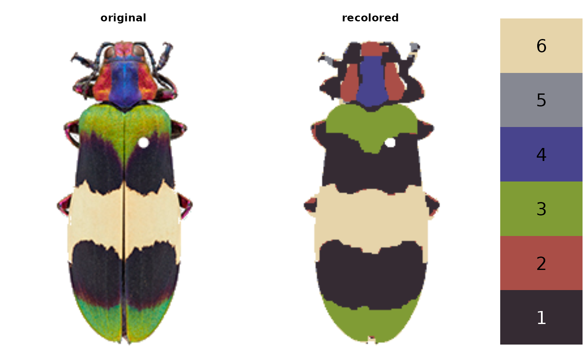

Edit a color patch using morphological operations
editLayer.RdApplies one of several morphological operations from imager to a layer of a
recolorize object. Convenient for cleaning up a color patch without affecting
other layers of the recolorized image. This can be used to despeckle, fill in
holes, or uniformly grow or shrink a color patch.
Arguments
- recolorize_obj
A recolorize object from
recolorize,recluster, orimposeColors.- layer_idx
A single index value (numeric) indicating which layer to edit. Corresponds to the order of the colors in the
centersattribute of the recolorize object, and to the indices in thepixel_assignmentsattribute of the same.- operation
The name of an imager morphological operation to perform on the layer, passed as a string. See details.
- px_size
The size (in pixels) of the elements to filter. If
operation = "shrink"andpx_size = 2, for example, the color patch will be shrunk by a 2-pixel radius.- plotting
Logical. Plot results?
Value
A recolorize object. The sizes, pixel_assignments,, and
recolored_img attributes will differ from the input object for the
relevant color patch (layer) to reflect the edited layer.
See also
editLayers for editing multiple layers (with multiple operations) at once; a wrapper for this function.
Examples
# load image and recolorize it
img <- system.file("extdata/corbetti.png", package = "recolorize")
# first do a standard color binning
init_fit <- recolorize(img, bins = 2, plotting = FALSE)
#>
#> Using 2^3 = 8 total bins
# then cluster patches by similarity
re_fit <- recluster(init_fit, cutoff = 40)


# to reset graphical parameters:
current_par <- graphics::par(no.readonly = TRUE)
# examine individual layers:
layout(matrix(1:6, nrow = 2))
layers <- splitByColor(re_fit, plot_method = "color")

# notice patch 2 (cream) - lots of stray pixels
edit_cream_layer <- editLayer(re_fit,
layer_idx = 2,
operation = "clean",
px_size = 3)

# shrinking and growing by the same element size gives us less flexibility, so
# we can also shrink and then grow, using different px_size arguments:
edit_green_1 <- editLayer(re_fit,
layer_idx = 4,
operation = "shrink",
px_size = 2)

edit_green_2 <- editLayer(edit_green_1,
layer_idx = 4,
operation = "grow",
px_size = 3)

# we can get pleasingly mondrian about it:
new_fit <- re_fit
for (i in 1:nrow(new_fit$centers)) {
new_fit <- editLayer(new_fit,
layer_idx = i,
operation = "fill",
px_size = 5, plotting = FALSE)
}
plot(new_fit)

graphics::par(current_par)